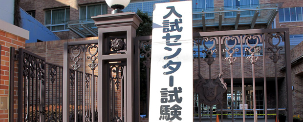

高校生を教えている私にとって、１月といって思い浮かべるイメージはお正月でも成人式でもありません。ただ一つ、センター試験です。
今年も来週末にはセンター試験が実施されますが、それに備えて私が勤める塾でも昨年末からセンター対策の授業を行ってきました。
センター試験は大学受験生のほとんどが受けるため、その対策法は業界ではかなり研究され、確立されています。本屋さんに行くと「センター試験予想問題パック」なるものが各予備校からたくさん売り出されていて、内容も形式も本番とそっくりの問題をあらかじめ解くことができます。
そんな予想問題の一つを最近授業で扱って感じたことが一つ。
ここ数年のセンター現代文、なにか変だ
昨年、一昨年とセンター国語は難化を続けてきました。現代の学生には少し読みづらい、時代がかった文章が本文として出題されたり、特殊な表現が多い小説文が出てきたりと、ずいぶん話題をさらいました。そんなわけで、一昔前はセンターの問題はできて当たり前のものでしたが、最近では中堅レベルの私立の問題よりも明らかに難しくなっています。
国語の場合、難しい問題にはいくつかのパターンがあります。一つ目は、本文を理解するのが難しいものが設問は簡単なもの。次に本文は簡単だが設問が難しいもの、最後に本文も設問も難しいものです。近年のセンターの場合、この最初のパターンがそれに当たります。このパターンは試験時間に余裕がある場合はよいのですが、時間制限が厳しい場合、高得点をとるためにはむしろ「本文の内容を理解しようとしないこと」が重要になります。そもそも内容が難解ですから、しっかりと理解するためには時間が必要になります。それを短時間に中途半端にやろうとすると、かえって混乱してしまうのです。そのため、高得点をとりたければ内容など気にせず、ひたすら文章の形式だけを追い、公式に当てはめるように解くしかありません。もちろんそのような解き方が全く無意味とはいいませんが、問題を難しくした理由は読解力の高い生徒を作りたかったからなはず。ならばもう少し時間の余裕を与えて内容をしっかり理解させる方向にすべきなのではないか。それが不可能ならば、せめて昔のように本文も問題も簡単な「最低限のラインを見る」為のテストに戻す方がよいのではないか。
この時期最後の追い込みでセンターの問題を扱う度に、なにか釈然としないものが残ります。
そんな心の内はともかくも、生徒のみなさんには全力を出しきってほしいと思います。
センターがんばれ！！